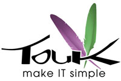

Witaj Warszawo!
Rails Girls comes to Warsaw for the second time! Join the free, two-day crash-course to the exciting world of building web applications with Ruby on Rails.
Applications are now closed.
Rails Girls aims to give tools for girls and women to build their ideas.
You learn designing, prototyping and coding by doing it with help from our coaches.
You want to help? We are looking for partners and sponsors. Email us.
created by: Jakub Terczyński & Michał Kozieł
We'll add more photos soon. If you have some send us the link at railsgirlswarsaw@gmail.com
Check out how the first Warsaw edition workshop looked, here: Rails Girls Warsaw 2012. Don't miss out on our great video!
| 15.00 - 17.00 |
Registration, pre-conference mixer & installation festGet to know the attendees a little bit before hand. We’ll also install Ruby on Rails on your computer, so bring your laptop with you. |
|---|---|
| 17.00 - 18.00 |
Welcome talksMagdalena MalinowskaStaś Małolepszy Magdalena Wójcik |
| 18.00 - 20.00 |
Tryruby.orgLet's get coding! |
| 23.00 - |
Middleparty at Cafe KulturalnaOpen for everyone, meet people interested in tech. |
| 9:00 - 10:00 |
Breakfast & tea/coffee |
|---|---|
| 10:00 - 13:00 |
WorkshopJumpstart your first web application |
| 13:00 - 13:30 |
Lunch |
| 13.30 - 13.45 |
Bentobox - Understanding Web AppsRecap of what we’ve learned and how it all fits together, led by Anna Warzecha |
| 13.45 - 14.30 |
Lighting talksBianka SiwińskaAnia Walkowska Ala Peszkowska Joanna Ganszyniec |
| 14.30 - 16.00 |
WorkshopExtend your application. |
| 16.00 - 16.30 |
Final lightning talksPaulina GóreckaOla Sitarska Zuznna Stańska Olga Grabek |
Application deadline: April 1, 2013
Acceptances informed: April 7, 2013
Location: Centrum Prasowe Foksal, ul. Foksal 3/5, Warsaw, Poland - Map
Positionly is a must have tool for every website owner who's serious about the position in search engines. Positionly makes website tracking and analyzing simple, and something you’ll actually enjoy.
D-Link is one of the world’s leading networking infrastructure providers, and this marks its 27th year of delivering innovative, high-performing and intuitive products for both businesses and consumers.
 Github Originally founded by Tom Preston-Werner, Chris Wanstrath, and PJ Hyett to simplify sharing code, GitHub has grown into the largest code host in the world.
Github Originally founded by Tom Preston-Werner, Chris Wanstrath, and PJ Hyett to simplify sharing code, GitHub has grown into the largest code host in the world.
Google doesn’t need to be introduced to anyone. But let’s remind the company’s mission, which is to organize the world’s information and make it universally accessible and useful.
 Mozilla is a proudly non-profit organization dedicated to keeping the power of the Web in people’s hands. We’re a global community of users, contributors and developers working to innovate on your behalf.
Mozilla is a proudly non-profit organization dedicated to keeping the power of the Web in people’s hands. We’re a global community of users, contributors and developers working to innovate on your behalf.
 Rebased is a group of Ruby and Javascript developers - only developers - focused on delivering quality code. Their tagline sums it all: "We code. And we're good at it".
Rebased is a group of Ruby and Javascript developers - only developers - focused on delivering quality code. Their tagline sums it all: "We code. And we're good at it".
 Tchibo Cafissimo is a pressure coffee maker for 100% Tchibo Arabica in aroma capsules which will surely become your best friend at your web projects. Enjoy its huge versatility and the perfect espresso, caffè crema
and filter coffee it makes at the push of a button. Tchibo Cafissimo - your all-rounder for ultimate pleasure.
Tchibo Cafissimo is a pressure coffee maker for 100% Tchibo Arabica in aroma capsules which will surely become your best friend at your web projects. Enjoy its huge versatility and the perfect espresso, caffè crema
and filter coffee it makes at the push of a button. Tchibo Cafissimo - your all-rounder for ultimate pleasure.
 code quest You could think they're a bunch of guys working under the water but they actually dive into the code! It is a company using Ruby On Rails to provide well-crafted and beautifully designed web applications for smaller and bigger businesses.
code quest You could think they're a bunch of guys working under the water but they actually dive into the code! It is a company using Ruby On Rails to provide well-crafted and beautifully designed web applications for smaller and bigger businesses.
SDP Warszawa Association of Polish Journalists Warsaw Branch
SoftwareMill is a 100% dispersed software house that delivers custom solutions across the globe. The company develops web applications, back-end systems and enterprise solutions. They're build with care and strong belief for agile approach.
Touk is the team which makes IT better and simpler for big companies. We care a lot about software craftsmanship. We have fun using new technologies. We solve problems.
How much does the workshop cost? Nothing, it's free! You just need to be excited!
Who is this aimed for? Women of any age with basic knowledge of working with a computer. We’ve had people of all ages taking part. Most of the program is run in english and please bring your laptop.
How do you choose the attendees? We want a diverse group of people who are motivated and curious about learning.
Can men attend? Yes, but you need to be accompanied by an interested lady. Also, girls are given a priority.